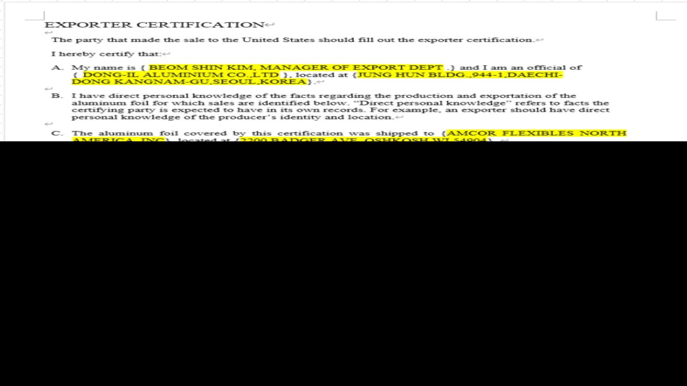

EXPORTER CERTIFICATION
The party that made the sale to the United States should fill out the exporter certification.
I hereby certify that:
A. My name is ( @@@@ .) and I am an official of {@ }, located at {@@@@)
B. I have direct personal knowledge of the facts regarding the production and exportation of the aluminum foil for which sales are identified below. "Direct personal knowledge" refers to facts the certifying party is expected to have in its own records. For example, an exporter should have direct personal knowledge of the producer's identity and location.
C. The aluminum foil covered by this certification was shipped to (@@@@), located at {@@@@).
D. The seller certifies that the aluminum foil produced in (@@@@} that is covered by thiscertification was not manufactured using aluminum foil and/or sheet produced in China, regardless of whether sourced directly from a Chinese producer or from a downstream supplier.
E. The aluminum foil covered by this certification is not covered by the antidumping duty or countervailing duty orders on certain aluminum foil from the People's Republic of China.
F. This certification applies to the following sales to {@@@@}. located at {@@@@} (repeat this block as many times as necessary)
Foreign Seller's Invoice # to U.S. Customer: @@@@
Foreign Seller's Invoice to U.S. Customer PO#: @@@@
Foreign Seller's Invoice to U.S. Customer Line Item #: @@@@
Foreign Seller's Invoice to U.S. Customer Line Item #: @@@@
Producer Name: @@@@
Producer's Address: @@@@
Producer's Invoice # to the Foreign Seller: NA (if the foreign seller and the producer are the same party, report "NA" here)
G. I understand that ( @@@@ } is required to maintain a copy of this certification and sufficient documentation supporting this certification (i.e., documents maintained in the normal course of business, or documents obtained by the certifying party, for example, product specification sheets, customer specification sheets, production records, invoices, etc.) until the later of: (1) the date that is five years after the latest entry date of the entries covered by the certification; or (2) the date that is three years after the conclusion of any litigation in United States courts regarding such entries.
H. I understand that ( @@@@ } is required to provide the U.S, importer with a copy of this certification and is required to provide U.S. Customs and Border Protection (CBP) and/or the U.S. Department of Commerce (Commerce) with this certification, and any supporting documents, upon the request of either agency.
I. I understand that the claims made herein, and the substantiating documentation, are subject to verification by CBP and/or Commerce.
J. I understand that failure to maintain the required certification and supporting documentation, or failure to substantiate the claims made herein, or not allowing CBP and/or Commerce to verify the claims made herein, may result in a de facto determination that all sales to which this certification applies are sales of merchandise that is covered by the scope of the antidumping and countervailing duty orders on aluminum foil from China. I understand that such a finding will result in:
(i) suspension of liquidation of all unliquidated entries (and entries for which liquidation has not become final) for which these requirements were not met;
(ii) the importer being required to post the antidumping and countervailing duty cash deposits determined by Commerce; and
(iii) the seller/exporter no longer being allowed to participate in the certification process.
K. I understand that agents of the seller/exporter, such as freight forwarding companies or brokers, are not permitted to make this certification.
L. This certification was completed and signed, and a copy of the certification was provided to the importer, on, or prior to, the date of shipment if the shipment date is after the date of publication of the notice of Commerce's preliminary determination of circumvention in the Federal Register. If the Shipment date is on or before the date of publication of the notice of Commerce's preliminary determination of circumvention in the Federal Register, this certification was completed and signed, and a copy of the certification was provided to the importer, by no later than 45 days after publication of the notice of Commerce's preliminary determination of circumvention in the Federal Register.
M. I am aware that U.S. law (including, but not limited to, 18 U.S.C. section 1001) imposes criminal sanctions on individuals who knowingly and willfully make materially false statements to the U.S. government.
Signature